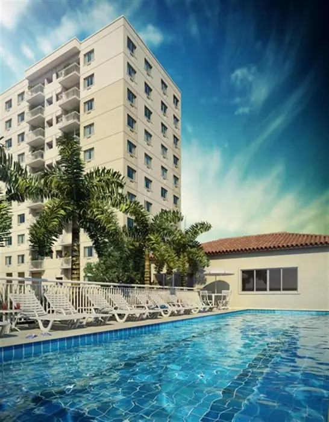

UMA NOVA OPÇÃO PARA NITERÓI
UMA NOVA OPÇÃO PARA NITERÓI
Niterói acaba de receber um grande projeto: o Nova Alameda Residencial, uma nova forma de morar com segurança, lazer e conforto em um dos bairros mais tradicionais da cidade. Com localização privilegiada, o empreendimento está situado numa das principais vias de acesso, a Alameda São Boa Ventura. E o melhor: todo o projeto foi feito pensando em oferecer o melhor para você e sua família, do jeito que sempre sonharam.
Metragens, tipologias e disponibilidade conforme material oficial da incorporadora, sujeitos a alteração sem aviso. Valores e condições confirmados na tabela vigente. Seleção e atendimento: Paulo Cotrim, CRECI-RJ 77677-F.